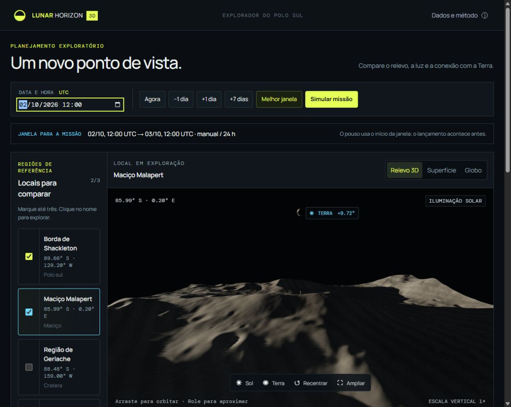
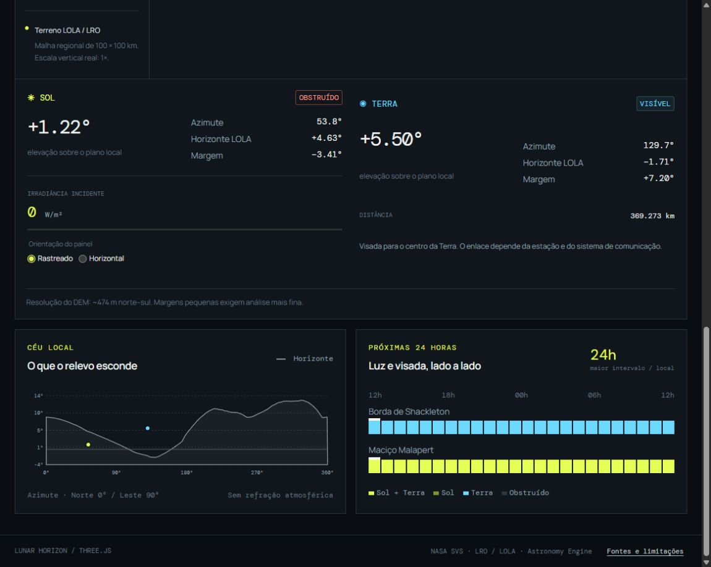
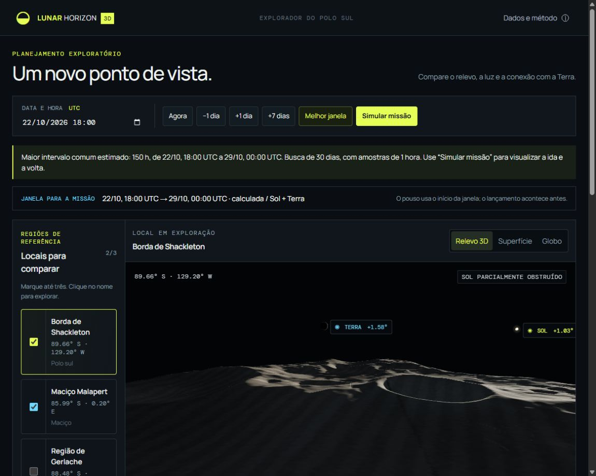
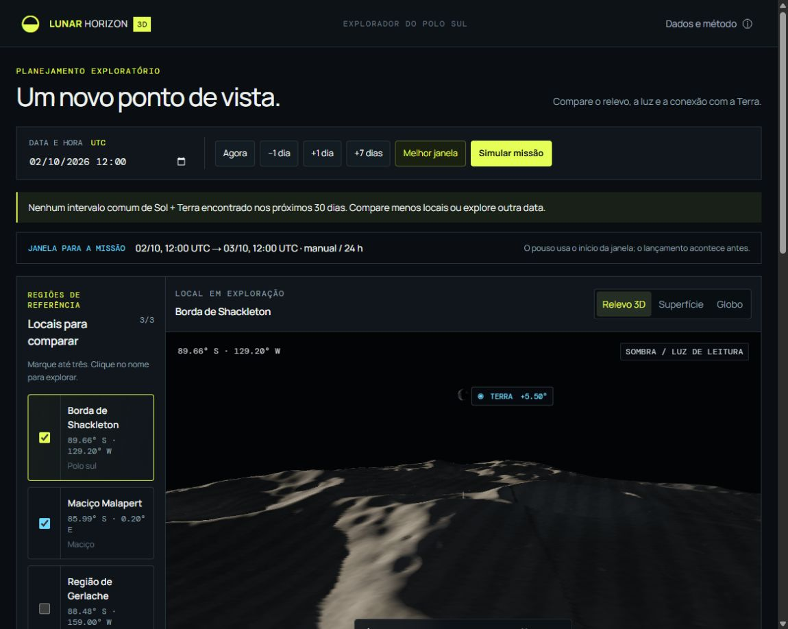
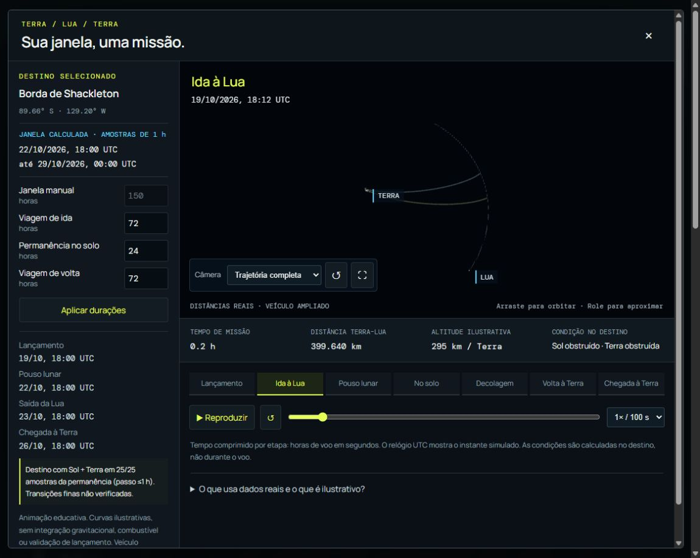
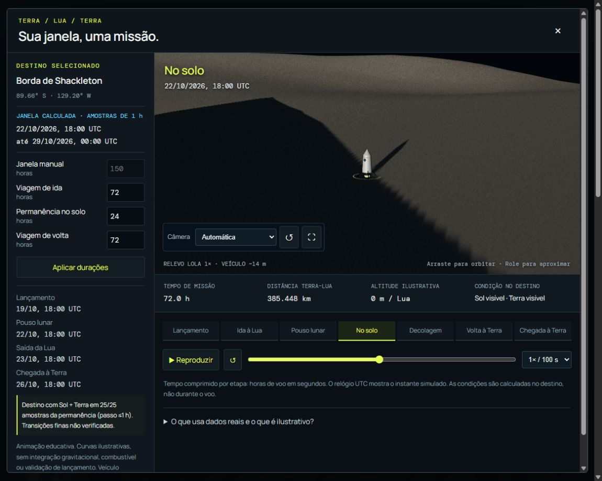

“O enlace está garantido.”
Terra visível significa visada para seu centro. Faltam estação terrestre, antena, apontamento, frequência e orçamento do enlace.
GUIA DE USO ILUSTRADO
Aprenda a comparar locais, reconhecer obstruções do relevo e acompanhar uma missão educativa da Terra à Lua e de volta.
Iniciar Lunar Horizon.cmd, na pasta do projeto. Acesse localhost:4173.
Relevo 3D mostra a região; Superfície aproxima a visão do observador; Globo situa o ponto na Lua. Arraste para orientar e role para aproximar.
Use Sol e Terra para olhar em suas direções, Recentrar para recuperar a câmera e Ampliar para tela cheia. A câmera não muda os cálculos.
Compare a posição do astro com o horizonte do relevo naquela direção, e não apenas com o plano horizontal.

A cena tem uma luz fraca de leitura: enxergar o solo em 3D não prova que ele esteja recebendo Sol. Para essa avaliação, use os indicadores numéricos.
Reproduza os parâmetros do passo 01. Clique alternadamente nos nomes dos dois locais. Os números abaixo são arredondados a partir dos cálculos do aplicativo.
| Resultado | Maciço Malapert | Borda de Shackleton |
|---|---|---|
| Margem do Sol | +1,91° · visível | −3,41° · obstruído |
| Margem da Terra | +11,59° · visível | +7,20° · visível |
| Irradiância incidente | ≈ 1.357 W/m² | 0 W/m² |
| Critério Sol + Terra neste instante | Atende no modelo | Não atende: falta Sol direto |
O que você pode concluir: Malapert tem luz e visada simultâneas nesse instante do modelo. O que não pode concluir: que os painéis alimentarão a missão ou que o rádio funcionará. W/m² mede radiação incidente por área, não potência elétrica disponível.
As faixas de Próximas 24 horas mostram uma amostra por hora e por local. Amarelo indica Sol + Terra, verde indica apenas Sol, azul apenas Terra e cinza ambos obstruídos. Passe sobre um bloco para ler seu horário; clicar nele muda a data e o local em foco.
O número “maior intervalo / local” é o maior intervalo individual nessas 24 horas. Não é a janela comum da comparação. Para essa busca, use Melhor janela.

Volte a 02/10/2026 às 12:00 UTC, mantenha altura de 2 m e marque Shackleton + Malapert + Haworth. Clique em Melhor janela: não há intervalo comum encontrado nesses 30 dias.

Como continuar: compare menos locais ou explore outra data e recalcule. Sem janela calculada válida, a simulação usa um intervalo manual iniciado na data selecionada. Manual não significa otimizado ou favorável.


Automática enquadra a órbita terrestre a 300 km e as órbitas lunares a 100 km, antes do pouso e após a decolagem. São 1,5 volta terrestre e 1 volta em cada trecho lunar, com os motores desligados. O contador mostra voltas e velocidade circular; os períodos são cerca de 90,5 min na Terra e 117,8 min na Lua. Trajetória completa mostra o conjunto; Acompanhar veículo segue o foguete. As 13 etapas incluem as queimas de injeção translunar, inserção lunar e injeção à Terra. A reprodução completa dura 140 s em 1×. Descida e subida têm 20 s cada, com cerca de 14–15 s próximos do solo e aproximação/afastamento gradual da câmera. Nos últimos 400 m de descida ou nos primeiros 400 m de subida, a câmera usa o relevo LOLA. O foguete mantém a orientação para a frente nas órbitas e só inicia a rotação para a vertical durante a descida. As capturas acima mostram a interface anterior às órbitas.
| Tentativa | Por que não funciona | Como corrigir |
|---|---|---|
| Comparar quatro locais ou nenhum | A seleção aceita de 1 a 3 pontos. | Escolha até três; mantenha pelo menos um. |
| Data em 1999 ou 2051 | A faixa implementada é 2000–2050. | Use uma data válida. O cronograma completo da missão também deve caber nessa faixa. |
| Permanecer 151 h na janela de 150 h | A permanência ultrapassa a janela; o formulário não aplica o valor. | Use no máximo 150 h; a adequação das condições ainda precisa ser avaliada. |
| Permanecer 48 h numa janela manual de 24 h | A permanência excede o intervalo manual. | Ajuste a janela manual ou a permanência. Aumentar a janela não garante luz e visada. |
| Ida ou volta de 12 h | O controle aceita 24–240 h por trecho. | Informe um valor permitido; essa faixa é do aplicativo, não uma garantia física. |
Terra visível significa visada para seu centro. Faltam estação terrestre, antena, apontamento, frequência e orçamento do enlace.
Irradiância não inclui área, eficiência, temperatura, consumo nem baterias. Não use W/m² como autonomia elétrica.
Somente as órbitas de estacionamento usam a solução circular de dois corpos. Transferências e queimas são ilustrativas; não há solução orbital completa, continuidade garantida de velocidade entre etapas, combustível ou delta-v. Dar voltas não produz um estilingue automático. Janela de iluminação não é janela orbital.
O terreno original tem espaçamento de aproximadamente 474 m norte–sul; não resolve pedras, inclinações pequenas ou contato das pernas. Os pontos são referências regionais, não sítios certificados.
O servidor precisa estar ativo. Execute Iniciar Lunar Horizon.cmd na pasta D:\Nasa_Space_Apps\lunar-horizon e recarregue localhost:4173. O inicializador mantém o servidor independente do terminal temporário e não publica o site. Após reiniciar o Windows, execute-o novamente.
Se o inicializador informar que a porta 4173 está ocupada, não encerre um processo desconhecido. Consulte o registro artifacts/localhost-server.log. Para testar o endereço IPv4, use 127.0.0.1:4173.
Leia o aviso da página. Se WebGL não puder iniciar, os cálculos e os gráficos continuam disponíveis quando os dados foram carregados. Verifique a aceleração gráfica ou experimente outro navegador. Se a mensagem indicar falha nos dados, recarregue e verifique o servidor.
Confira data e hora UTC, coordenadas do ponto, caixas marcadas, nome em exploração, altura e orientação do painel. A seleção é lembrada neste navegador; abrir a página não restaura os parâmetros deste guia. Alterações na comparação exigem uma nova busca de janela.
Para conhecer os dados e as aproximações, abra Dados e método no aplicativo ou O que usa dados reais e o que é ilustrativo? na simulação. As imagens deste guia são capturas reais da versão local, com os parâmetros indicados.
Abrir Lunar Horizon